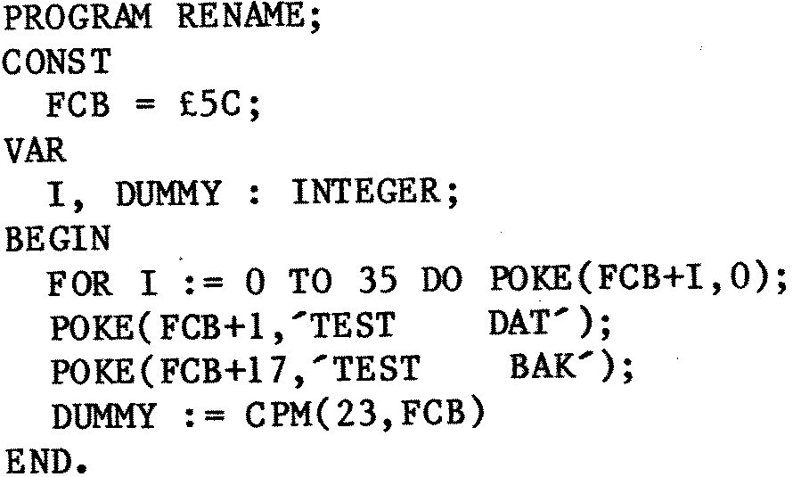

80-Bus News |
July–August 1984 · Volume 3 · Issue 4 |
| Page 13 of 43 |
|---|
Note that this program is very “basic” in that at no point does it check to see if any disk errors have happened, which in my opinion is not at all good practice. The reason I am allowing myself to get away with this sloppiness is that it has saved a lot of space. Be sure to put error checking in any serious program using these techniques, or you stand to lose serious files!
Suppose you want your program to erase a file. There is no way of doing that in standard Pascal, unless some committee has extended it without telling any of us! Hisoft Pascal has the useful predefined function “CP/M(V1,V2)”, which interfaces directly to the CP/M routines in the BIOS that you can normally only get at with machine code programs. It puts the number V1 MOD 256 in register C, and V2 in register pair DE, then calls address £0005, in precisely the way you would program such an act in assembler. You would, wouldn’t you? Any result that CP/M returns will be passed as the value of the function. The first program will erase a file. You don’t have to specify the file name in the program, as V2 can be the name of a variable. As it stands, the program will only erase files called ‘TEST.DAT’, but you can experiment to your heart’s content. (Or until the daft thing erases an important file, at which time you will need a file recovery program! Do not make the mistake of saving the file recovery program on the disk you are trying to repair!)
If there was a returned value, it would be in the variable DUMMY, which you would be able to test to see if the erasure had been done properly, but I have not bothered. The next program changes the name of a file. Again, there is no reason why the names of the files should be constants. Experiment more!
I am still thinking about how to add a random file facility to Hisoft Pascal. So, presumably, are Hisoft, as they announced that they intended to produce one some time ago.
END.
| Page 13 of 43 |
|---|